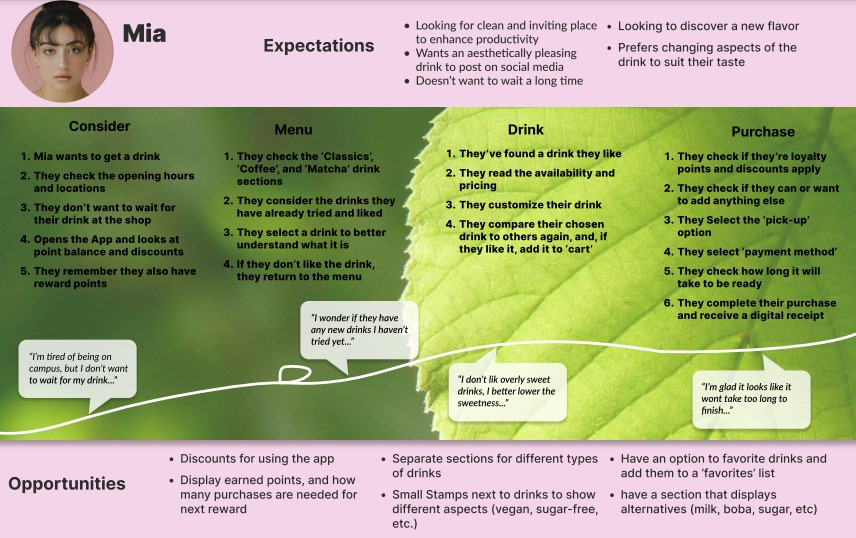
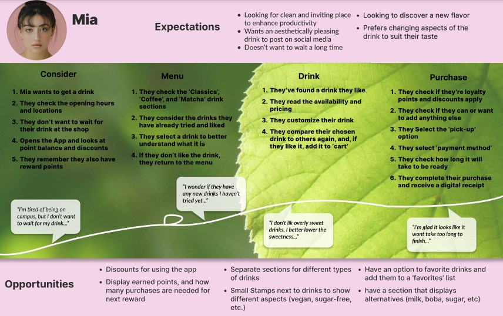

Shweta Sai Machiraju
Email Me
Connect With Me
I am a highly motivated ATEC student actively seeking an internship in Marketing Research, Graphic Design, UI/UX design, or Product design to gain practical, hands-on experience. I am driven by my passion for creating aesthetically pleasing and user-friendly designs, with a strong focus on accessibility and usability.
Education
University of Texas at Dallas - Bachelor of Arts; Arts, Technology, and Emerging Communication; Certification in UI/UX
Employment
Dream Finders Homes, Houston, TX — Marketing Internship, June 2023 - August 2023
TekVizion, Plano, TX — UI Design Internship, Febuary 2025 - current
Work Examples
 
